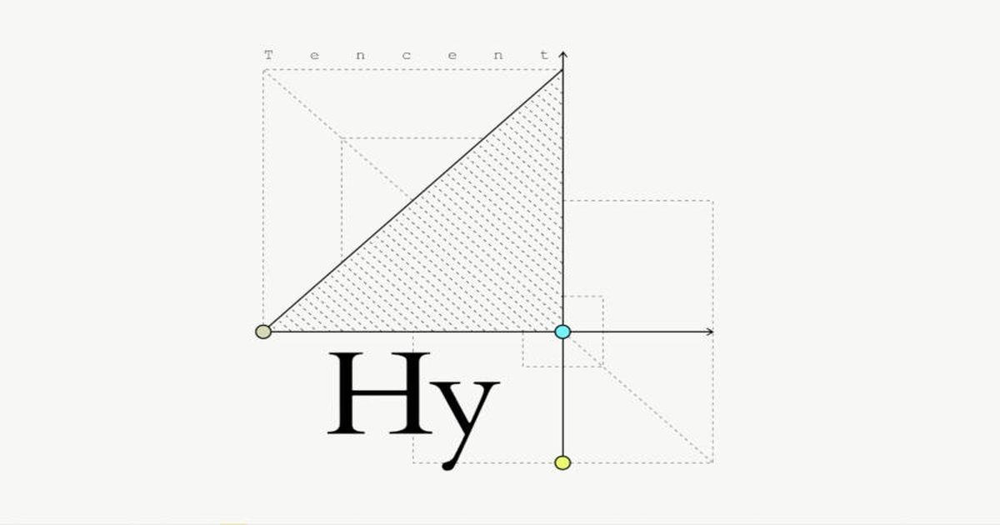

Китайская Tencent бросила вызов DeepSeek и Kimi — открытая ИИ-модель Hy4 умеет видеть и рассуждать
Китайский технологический гигант Tencent Holdings представил флагманскую модель искусственного интеллекта Hy4.
Она публикуется с открытыми весами и предлагает расширенные возможности ИИ-агентов, выступая основой для корпоративной платформы WorkBuddy.
Источник изображения: tencent.ai